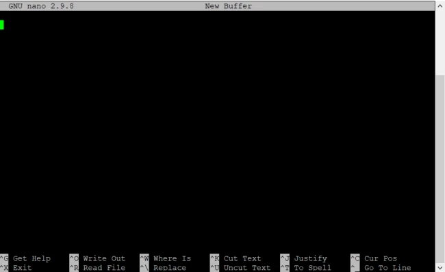

Bash/Shell Tutorial
The ability to navigate the filesystem using bash is a very important skill in statistical genetics. Bash is a programming language commonly used to navigate the terminal and manipulate files and folders. Some terminals run "bash-like" scripting languages like "zsh". For the purposes of this tutorial, they are indistinguishable from bash. There are approximately 50 bash commands that are used 95% of the time. Here we will review some common commands and do some simple file analysis.
Common Commands
cd
This command is used to change our directory, in the following manner:
cd $PATH
where $PATH represents the path to the target directory. Common usage of cd includes:
cd ~/ # will bring you to your home directory
cd $HOME # will bring you to your home directory
cd ../ # will bring you to the parent directory (up one level)
cd Downloads # will bring you to the Downloads directory, provided that you are in the home directory
cd ~/Downloads # will bring you to Downloads, no matter where you are in the filesystem
ls
This command allows you to look at the contents of a directory:
ls
Some common usage of ls includes:
ls # list the contents of the current directory
ls ~ # list the contents of the home directory
ls ~/Desktop # Will list the contents of the Desktop
For ls, there are a number of additional Unix command options that you can append to it to get additional information, for example:
ls -l # shows files as list
ls -lh # shows files as a list with human readable format
ls -lt # shows the files as a list sorted by time-last-edited
ls -lS # shows the files as a list sorted by size
mkdir
This command to create a new directory in your home folder:
mkdir ~/test_directory
The following commands should be carried out within this directory
Use cd to enter the directory:
cd ~/test_directory wsl
echo
echo prints to screen:
echo "Hello"
touch
touch creates a new (empty) file:
touch foo
rm
rm deletes a file:
rm foo
^
The carrot sign ^ sends the output to a file:
echo "Hello" > output.txt
cat
cat prints the entire contents of a file to the screen:
cat output.txt
less
less can be used to view a file:
less output.txt
to return to the terminal press q
cp
cp copies a file:
cat output.txt output2.txt
nano
nano can be used to edit a file:
nano data1.txt
Will bring up an editor window:

Starting from the top line type:
bob 1
fred 2
mary 3
noah 4
sally 5
And then save the file using Ctrl-O and press enter, and quit using Ctrl-X.
wc
The word count command wc can be used to count the number of lines or words in a file:
wc -l data1.txt
grep
Can be used to search a file for a string:
grep "noah" data1.txt
will return all the lines in data1.txt containing the string "noah".
File Analysis
A very powerful feature of the terminal is the awk programming language, which allows us to extract subsets of a data file, filter data according to some criteria or perform arithmetic operations on the data. awk manipulates a data file by performing operations on its columns - this is extremely useful for scientific data sets because typically the columns are features or variables of interest.
For example, we can use awk to produce a new file that squares the data in our previous file:
awk '{print $1,$2*$2}' data1.txt > data2.txt
We can also use awk to add up all the squared data values:
awk 'BEGIN{total=0} {total+=$2} END{print total}' data2.txt